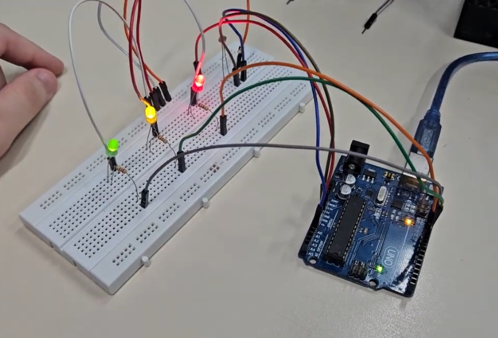
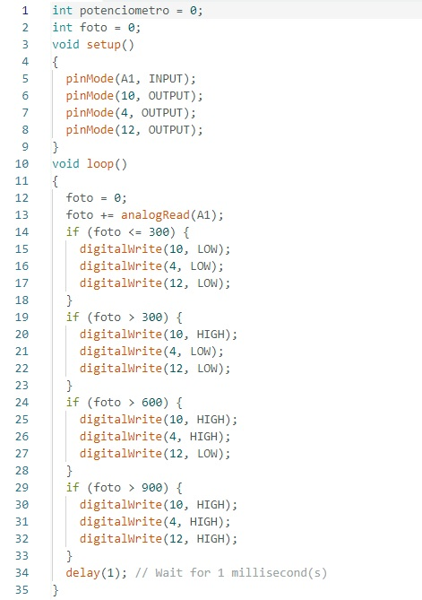
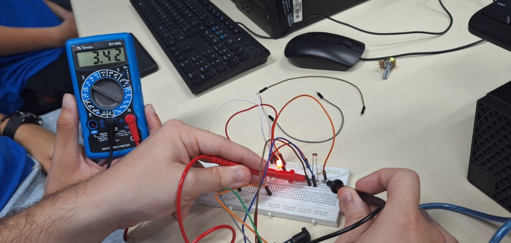
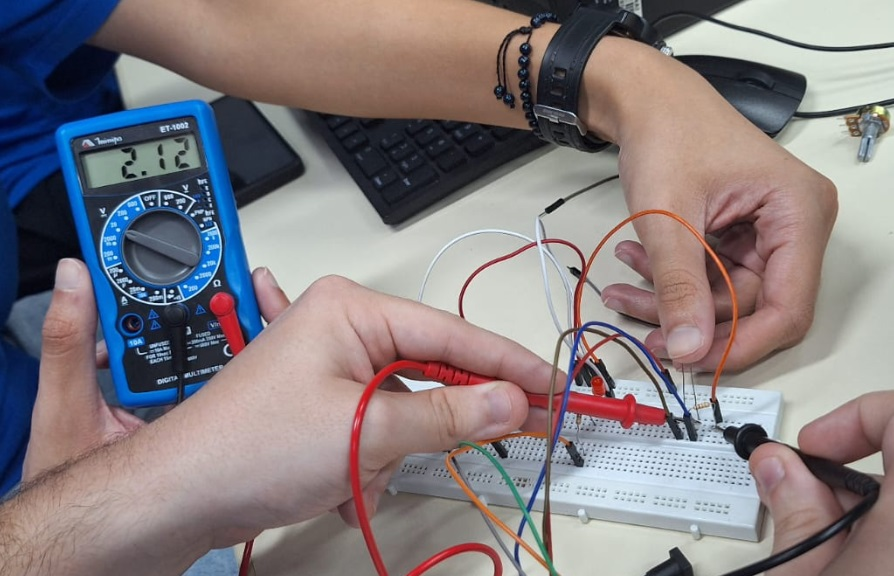

Controle de Iluminação
foto do LDR com a montágem física no ARDUÍNO (prática)

print de tela de um exemplo de código C++ no IDE ARDUÌNO

Fonte: Arduino IDE
Filmagem do controle de iluminação Funcionando
Logo abaixo foto das medidas realizadas com o multímetro


Print de tela da ligação do LDR e LEDs no Tinkercad